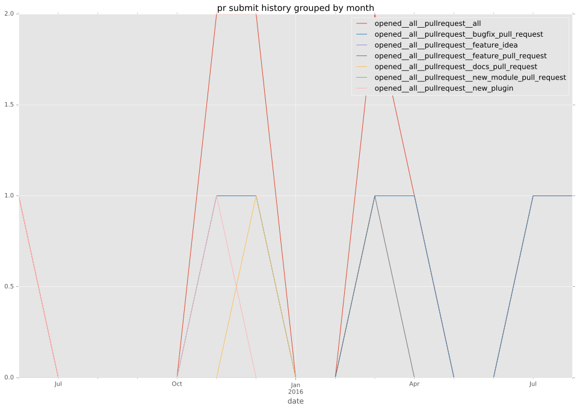
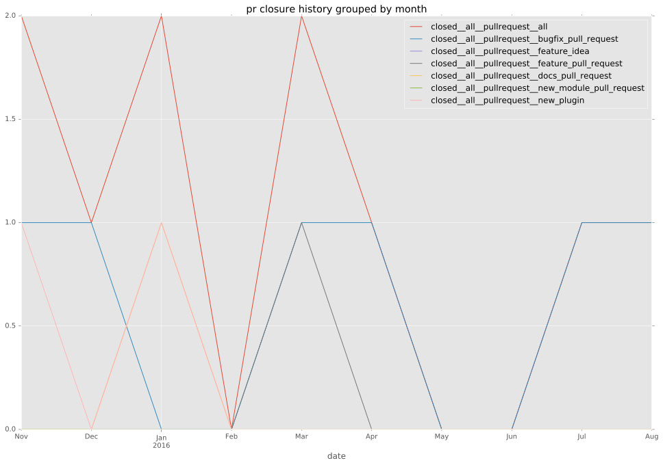

authors
- agireud
maintainers
- emonty
- shrews
- juliakreger
- j2sol
- rcarrillocruz
contributors
- emonty : 3 commits
- alvaroaleman : 3 commits
- rcarrillocruz : 2 commits
- bcoca : 2 commits
total issue counts
feature pull request: 1
pullrequest: 10
docs pull request: 2
bugfix pull request: 5
issue: 1
new plugin: 2
bug report: 1
issue history
pullrequest history


days open by issue type
bugfix pull request
count: 9
std: 9.04771303209
min: 0
max: 21
median: 0.0
mean: 5.11111111111
all
count: 18
std: 49.0627516021
min: 0
max: 210
median: 0.5
mean: 15.2777777778
pullrequest
count: 0
std: nan
min: nan
max: nan
median: nan
mean: nan
docs pull request
count: 3
std: 0.57735026919
min: 0
max: 1
median: 0.0
mean: 0.333333333333
feature pull request
count: 2
std: 0.0
min: 0
max: 0
median: 0.0
mean: 0.0
issue
count: 0
std: nan
min: nan
max: nan
median: nan
mean: nan
new plugin
count: 3
std: 116.624754376
min: 8
max: 210
median: 8.0
mean: 75.3333333333
bug report
count: 1
std: nan
min: 2
max: 2
median: 2.0
mean: 2.0
closures grouped by total days open